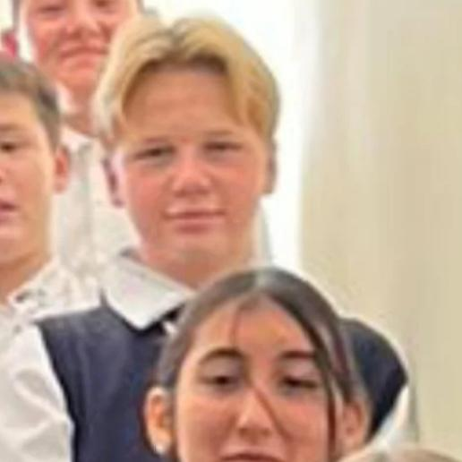
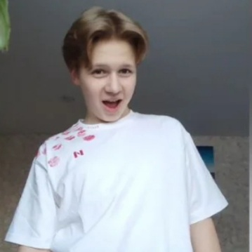
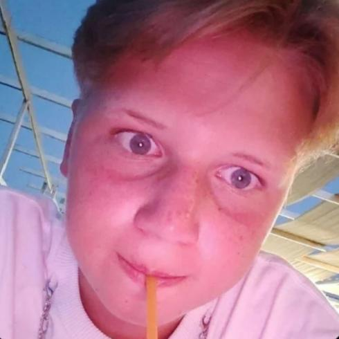
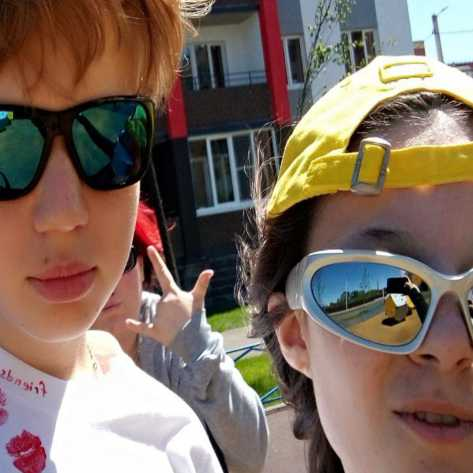
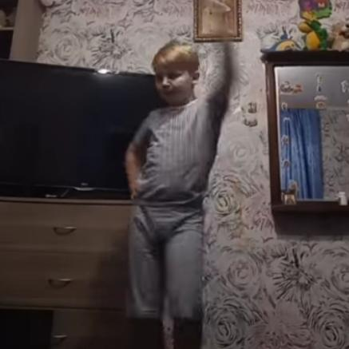
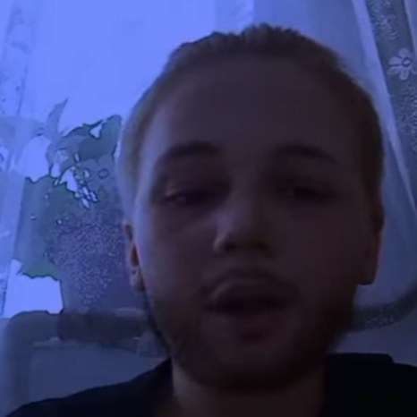
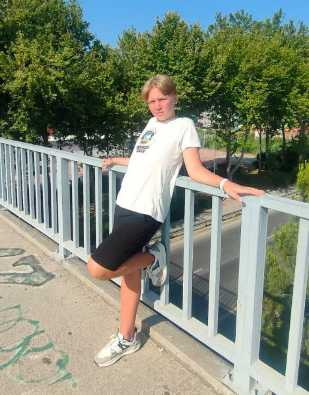
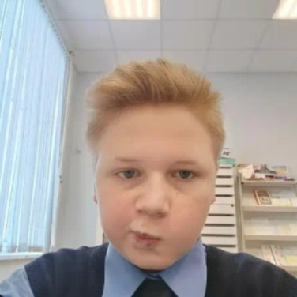
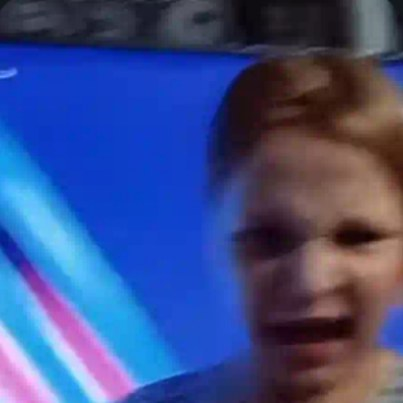
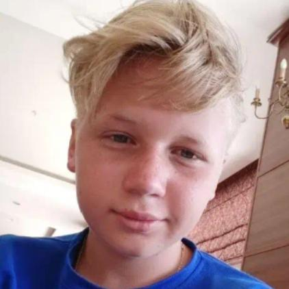

Мировая звезда ночных клубов
Хотя Матвей рос с пятью тысячами в неделю, он всегда стремился попробовать всё в этой жизни. Он много экспериментировал, ел, путешествовал, но его не покидала одна маленькая мечта — стать второй самой яркой звездой сцены. И он этого добился
Каждое его выступление — это шоу похлеще рамштайна, сочетающее элементы акробатики, театра, оперы, спецэффектов и завораживающего танца
Матвей не боится трудностей и всегда идёт вперёд, вдохновляя других своим примером. Его путь это история о смелости, таланте и настоящей страсти к своему делу






За годы блистательной карьеры Матвей заработал более 30 миллионов рублей только со своих сольных концертов. Эта сумма не включает доходы от частных выступлений, корпоративных мероприятий, рекламных контрактов и сотрудничества с другими артистами
Интересный факт: все свои доходы Матвей доверяет управлению своей бабушке
Бабушка Матвея инвестирует доходы артиста в мазик. Эта стратегия позволила семье не только сохранить, но и приумножить ввп россии
Хотите заказать выступление Матвея или задать вопрос? ну нахуя это вам?
ТГК: t.me/matveQr
Матвейчик уникальный человек. Он умудряется менять свои принципы и убеждения чаще, чем дышит
Матвей мастер переинтерпретирования собственных слов. Каждое его высказывание в контексте того момента, что позволяет ему отрицать буквально всё, что было сказано ранее
Матвей отправился в Турцию, чтобы встретиться с питерской девой, которая вдохновила его на новые творческие высоты
Матвей впервые попробовал чтото кроме того, что нечто почти белоснежное, калорийное, с текстурой разбавленного герметика и жирнющим, ахуеть каким уловимым ароматом, который делает любое блюдо завершённым шедевром (а лучше даже без самого блюда)
Вдохновлённый новыми впечатлениями, он придумал несколько новых номеров для своих выступлений
Эта поездка стала для Матвея не просто поездкой, но и важным этапом личного роста, который помог ему раскрыть новые грани своего таланта




Сидит и ждёт в тг мои эксклюзы
Мечтает обо мне, как об инклюзе
Вдыхает меня, будто я его наркотик
Он думает о звёздах и планирует эротик
Oн лучше всех, но он закрыл мне ротик
Он крутой, ведь у него есть мотик
Его широкие зрачки и очень белый носик